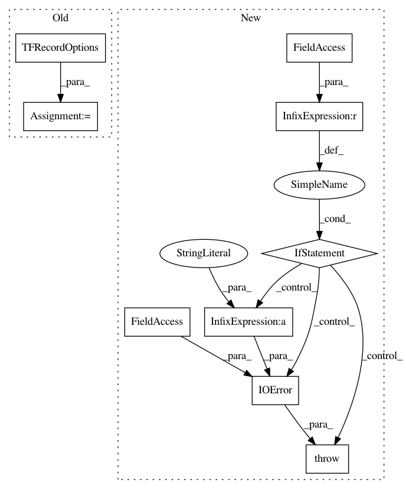

7d5a866a254cb9517ed24818b92e6f617fa4ed24,nucleus/io/genomics_reader.py,TFRecordReader,__init__,#TFRecordReader#Any#Any#Any#,131
Before Change
if not tf_options:
compressed = input_path.endswith(".gz")
tf_options = python_io.TFRecordOptions(
python_io.TFRecordCompressionType.GZIP if compressed else
python_io.TFRecordCompressionType.NONE)
self.tf_options = tf_options
def iterate(self):
Returns an iterator for going through all the file"s records.
After Change
self.reader = tfrecord_reader.TFRecordReader.from_file(
input_path, compression_type)
if self.reader is None:
raise IOError(errno.EIO,
"Error trying to open %s for reading" % input_path)
def iterate(self):
Returns an iterator for going through all the file"s records.
while self.reader.get_next():
yield self.proto.FromString(self.reader.get_record())
In pattern: SUPERPATTERN
Frequency: 4
Non-data size: 9
Instances
Project Name: google/nucleus
Commit Name: 7d5a866a254cb9517ed24818b92e6f617fa4ed24
Time: 2019-03-12
Author: no-reply@google.com
File Name: nucleus/io/genomics_reader.py
Class Name: TFRecordReader
Method Name: __init__
Project Name: google/deepvariant
Commit Name: 7dda9b4b84905534299c9557830c2d3f4389ad52
Time: 2019-03-12
Author: no-reply@google.com
File Name: third_party/nucleus/io/genomics_reader.py
Class Name: TFRecordReader
Method Name: __init__
Project Name: google/deepvariant
Commit Name: 7dda9b4b84905534299c9557830c2d3f4389ad52
Time: 2019-03-12
Author: no-reply@google.com
File Name: third_party/nucleus/io/genomics_writer.py
Class Name: TFRecordWriter
Method Name: __init__
Project Name: google/nucleus
Commit Name: 7d5a866a254cb9517ed24818b92e6f617fa4ed24
Time: 2019-03-12
Author: no-reply@google.com
File Name: nucleus/io/genomics_writer.py
Class Name: TFRecordWriter
Method Name: __init__